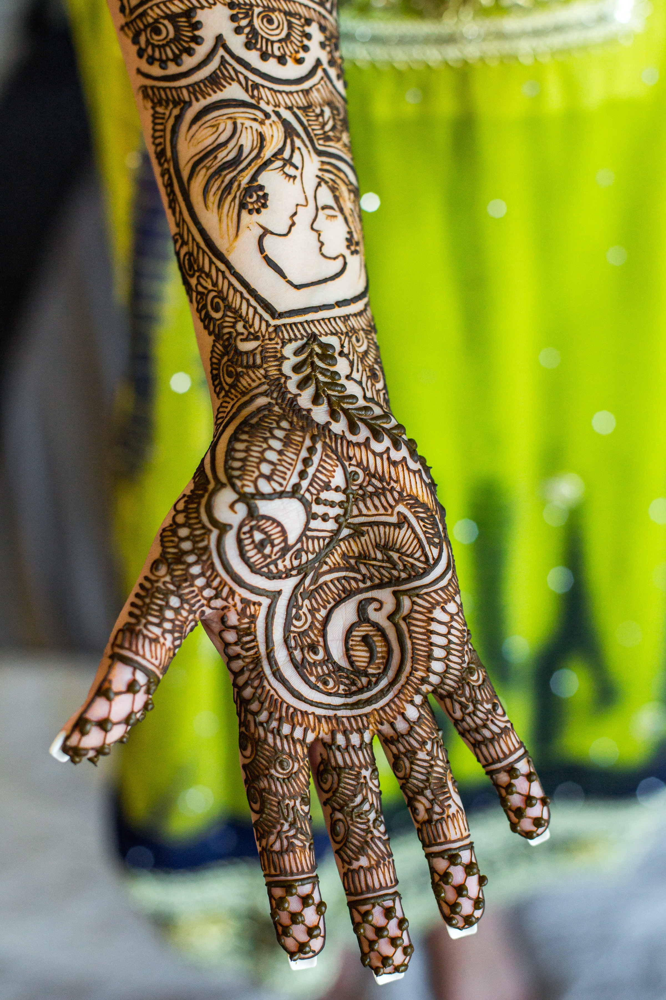

GRAPIC DESIGN

1. Here, I have taken a simple colored image from google. The goal is to make the image black and white except the hand. This has been done using the following steps-
- First, I simply get the duplicate of the image so that when I make any changes to the image I must have the original one to campare with.
- Then, I made the selection of the hand using quick selection tool. And for perfect selection I use refine edge.
- Using the current selection , we apply Layer Mask to it. So that the mask we have is of the selection we made.
- Next step was to add Black and white Adjustment layer. And that too was chained with the layer mask's layer only so that all the effect of the layer will be applied to the chained layer only.
- Then simply using black swatch as foreground colour, we made strokes over the hand where we want to conceal the Black & White effect over hand. And here how we get the final image.


2. Here, I have taken an image of car with some trees in the background. The goal is to clear it as if there is nothing in the background as well as this white line on the road.
- Duplicate the original layer.
- Get clone stamp tool, and pick the place you want to copy as it is.
- In this case, it was the tree behind and the white crossing line.
- Also, in this there were two samples taken.
CONTACT
- Email Id:
- singhkomal1209@gmail.com